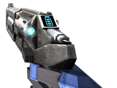
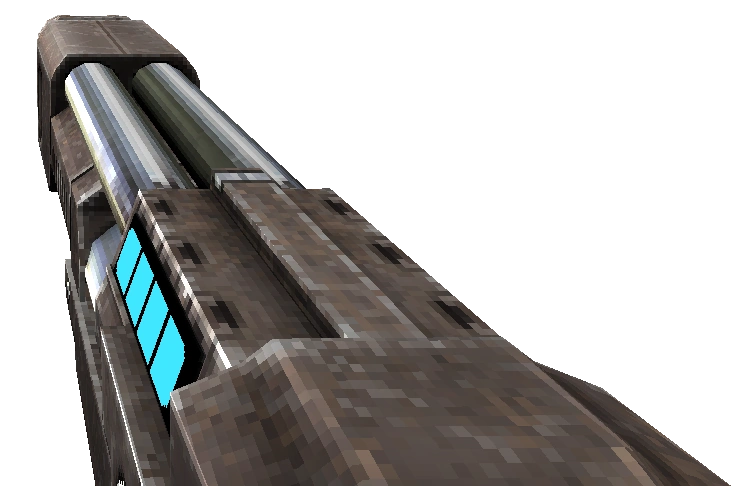
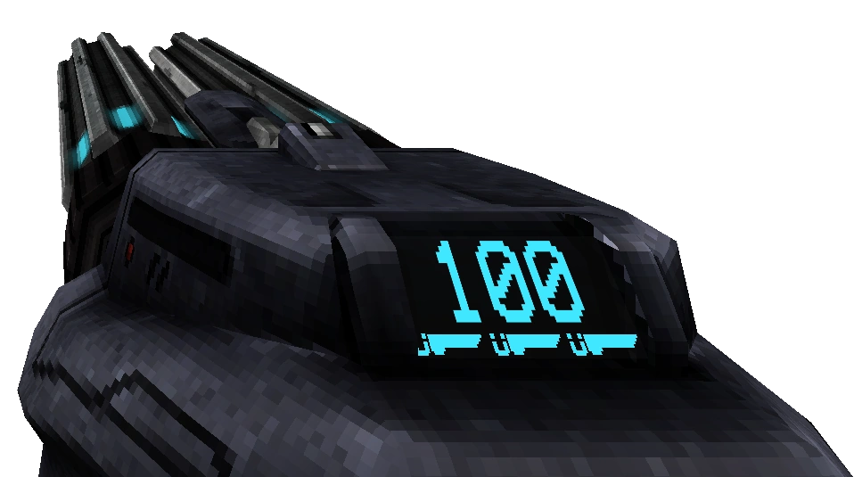
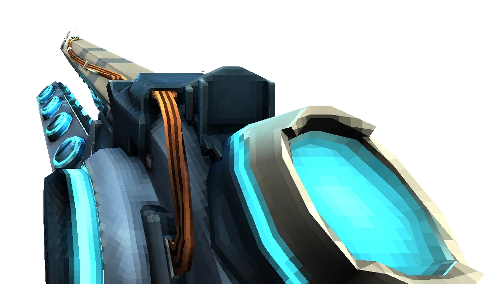
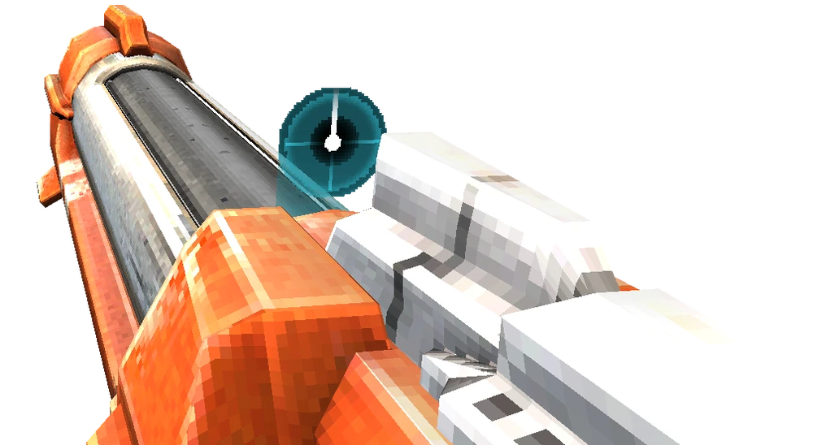
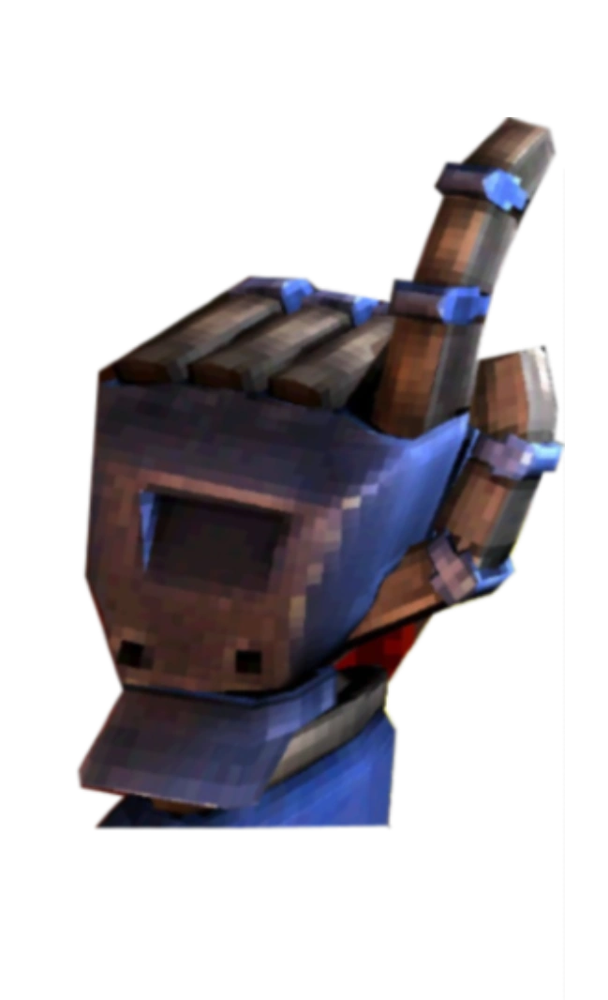
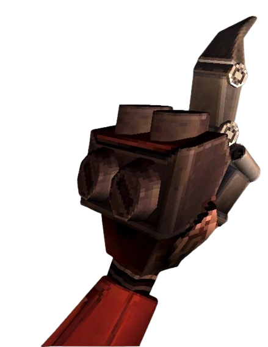
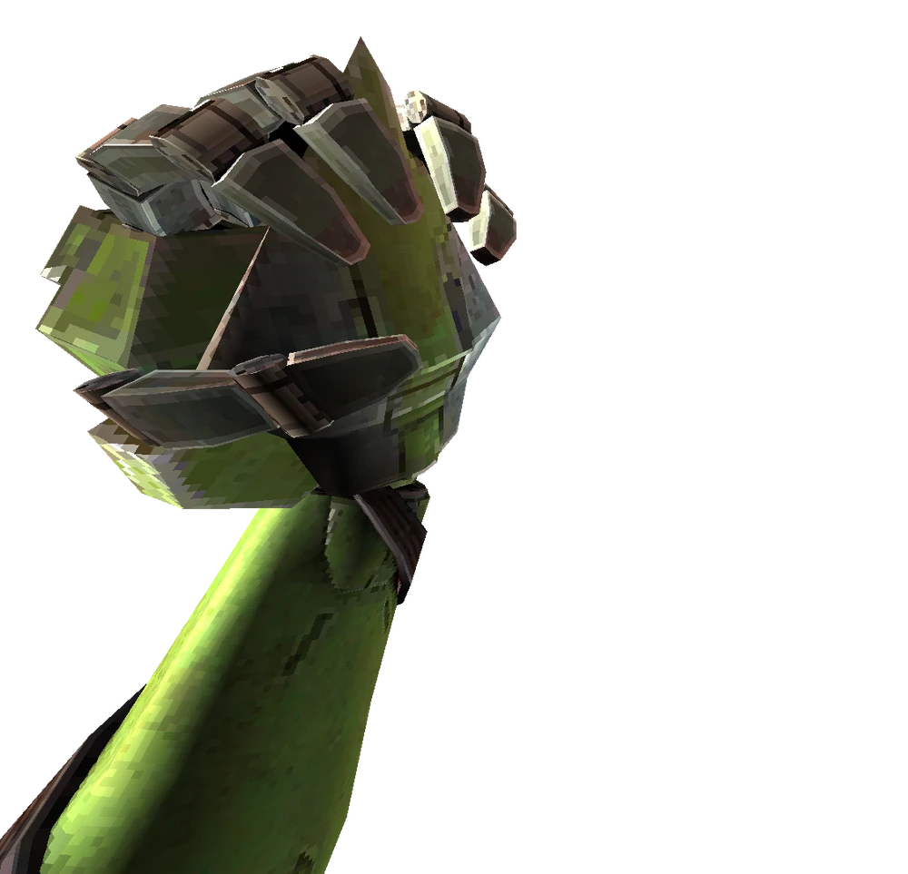

ARMAS
V1 usa cinco tipos de arma, e cada uma tem variantes que mudam o jeito de jogar. Veja as principais.
| Arma | Variante | O que faz |
|---|---|---|
 Revolver |
Piercer | Carrega um tiro carregado que atravessa inimigos. |
| Marksman | Permite jogar moedas e acertá-las para ricochetear qualquer projetil no inimigo mais proximo. | |
| Sharpshooter | Carrega um tiro que ricocheteia até 4 vezes. explode projéteis inimigos, o nucleo da Core Eject e foguetes. | |
 Shotgun |
Core Eject | Joga o núcleo da arma, que explode quando leva um tiro do revolver. |
| Pump Charge | Carrega a arma antes do disparo. Carregar demais explode a arma e dá 50 de dano no V1. | |
| Sawed-On | Tem um anexo de Serra elétrica, ao levar um soco do Knuckleblaster o anexo sai voando e pode ser grudado em um imã da Nailgun Attractor. | |
 Nailgun |
Attractor Magnet | Dispara um imã que atrai pregos, foguetes, a serra eletrica e inimigos que foram atingidos com pregos. |
| Overheat | Aquece ao atirar, quando 100% aquecido aumenta a velocidade de disparo em 300% por 1.5 segundos e queima os inimigos. | |
| Jumpstart | Conecta um cabo no inimigo que electrocuta ele depois de 10-7 segundos. o dano aumenta se o inimigo foi atingido por pregos ou tem imãs, agua ou moedas perto. todo inimigo com pregos proximo tambem é eletrocutado. | |
 Railcannon |
Electric | carrega um tiro elétrico com dano alto, tem as mesmas condicões especiais do Jumpstart. |
| Screwdriver | Dispara um parafuso que faz o inimigo sangrar muito(aumenta regeneração proxima). se o prego levar um soco do Feedbacker pode ser lançado em outro inimigo. | |
| Malicious | carrega um tiro explosivo com dano alto. se atingir um projétil inimigo, o nucleo da Core Eject ou um foguete cria uma explosão gigante. | |
 Rocket Launcher |
Freezeframe | Congela o foguete no ar. possibilitando subir no foguete e voar nele ou atirar nele pra explodir ele mais cedo. |
| S.R.S. Canon | Dispara uma bola de canhão que pode ser explodida com um tiro do revolver. um soco do Knuckleblaster destrói a bola dando um impulso e um soco do Feedbacker lança a bola novamente. | |
| Firestarter | Lança gasolina que pode cobrir o chão e paredes ou os inimigos. um foguete acende a gasolina do chão e um foguete ou tiro carregado do Overheat acendem inimigos cobertos de gasolina. |
BRAÇOS
O V1 tambem tem 3 braços, o Feedbacker, o Knuckleblaster e o Whiplash. o Feedbacker consegue rebater quase qualquer projétil dos inimigos e tambem os do jogador. o Knuckleblaster tem um soco lento com dano alto pode causar uma onda de choque e destroi algumas coisas. o Whiplash é um gancho que pode puxar ou se puxar para um inimigo dependendo do peso, ou puxar projetéis.



Existem outras variantes além das citadas aqui. Veja a lista completa na ULTRAKILL Wiki.